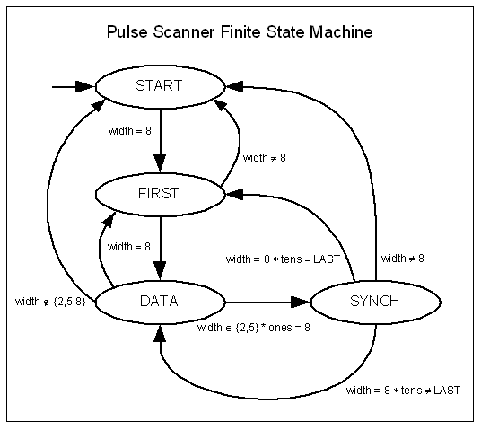

{kind=link}
 Copyright © 2007 by Hank Dolben
Copyright © 2007 by Hank DolbenLicensed under the Open Software License version 3.0
This is a reference design and implementation of a software decoder of an IRIG time code signal. It can be used, as is, in a real-time system or data analysis tool, or as a verifiable reference for implementation in assembly language or FPGA.
Test software is included as a demonstration of usage as well as design verification.
The basic function of the software is to convert a sequence of pulse widths into the data which the sequence represents according to IRIG. When a valid sequence of pulses for a second is recognized a client supplied function is called with the data, which can be converted into a conventional representation of time. The timing diagram shows the encoding of the pulse train for IRIG-B.
The software provides three ways of supplying the pulse data to the decoder, as a sequence of:
For either of the sampling modes, the software can be configured for the sampling rate and desired conditioning.
The source for the test, irigTest.c, provides an example of usage.
A client source code file should include the decoder's header irig.h, and must be linked with the object compiled from irig.c.
A client has three things to do:
Use irigSetFrame( IRIGB_FRAME irigFrame, short* irig ) to supply a function to be called by the decoder when it accepts a frame of data. It may optionally call a function to get the time, e.g., int irigbGetTime( short* irig, struct tm* t ) to decode the IRIG-B data into a conventional time structure (only year, day of year, hour, minute, and second are set).
If the processing of the IRIG data, pointed to by the parameter of the decoder's callback, needs to be done in a different context, the client must return a pointer to another buffer for the decoder to use for the next second's data. Otherwise, if the client completes its processing of the data before it returns from the callback, it may return the same pointer and may use the decoder's own buffer by passing NULL as the second argument to irigSetFrame().
The bash script verify tests the software for various configurations. It runs the irigTest and checks that its output is equal to its input. Since diff is used to test the equality, the input file format must be the same as the output format of the test program (%4d/%03d/%02d:%02d:%02d.%02d), and the times must be valid, i.e., representable by the IRIG time code.
The test program's configuration must match the decoder's. (See Compilation Options below.) The sampling rate is 20 samples per pulse by default and can be set with the preprocessor symbol IRIG_SAMPLES. The bit order is most significant bit first by default and can be set to the opposite order by defining the preprocessor symbol IRIG_LSBIT_FIRST. The format tested is IRIG-B by default and can be set by defining the preprocessor symbol IRIG_FORMAT to one of IRIG_A, IRIG_B, IRIG_D, IRIG_E, IRIG_G, or IRIG_H.
Compiling irig.c with -DDEBUG results in output to stderr from the state machine, showing the pulse width at entry to irigPulse and the state in START and SYNCH.
When irigSample() is used by a client, its configuration must match the IRIG signal sampling rate and desired conditioning. The settings for a 20 samples per pulse are in irigConfig.h, which is included by default. Defining the preprocessor symbol IRIG_CONFIG_H causes the file given by its value to be included instead. The Makefile contains examples of providing that setting to the compiler, based on the environment variable IRIG_SAMPLES. Compare irigConfig.h to irigConfig20.h to see the two basic types of conditioning; having gaps of invalid pulse widths or not. The constants, TWO_MIN, TWO_MAX, etc., specify the range of pulse widths, in samples, to accept as the nominal pulse widths in tenths of the pulse period: 2, 5, and 8.
By default irigReceive() treats the bits of its parameter as being ordered in time from the most significant to least significant. In other words, the most significant bit was the first sample. To process the bits in the other order, least significant bit first, define IRIG_LSBIT_FIRST.
By default the state machine handles codes with 10 positions per frame, e.g., IRIG-B. To configure it to handle codes with 6 positions per frame, e.g., IRIG-D, define IRIG_POSITIONS to be 6.
The 200-04 version (September 2004) of the IRIG standard added year to the encoding. The default base year, the value of IRIG_BASE_YEAR, is 2000. To handle signals that don't have the year, set IRIG_BASE_YEAR to 0.
The core of the software is a finite state machine shown below and implemented in irigPulse(), which is called for each pulse. State transitions are determined by the current state and the width of the pulse, plus two auxiliary variables (tens and ones) which number the pulses in a frame from (0,0) to (LAST,9). LAST may be 5 or 9, for 6 or 10 position frames respectively. A pulse width unit is a tenth of the pulse period. When an 8 unit wide pulse is received in the SYNCH state, with tens equal to LAST, the previous frame's pulse sequence is accepted.

The nominal sequence of states is:
ones: 0 1 2 3 4 5 6 7 8 9
tens ----- ---- ---- ---- ---- ---- ---- ---- ---- -----
---- START
0: FIRST DATA DATA DATA DATA DATA DATA DATA DATA SYNCH
1: DATA DATA DATA DATA DATA DATA DATA DATA DATA SYNCH
2: DATA DATA DATA DATA DATA DATA DATA DATA DATA SYNCH
.
.
.
LAST: DATA DATA DATA DATA DATA DATA DATA DATA DATA SYNCH
0: FIRST DATA ...
As a side effect of receiving a 5 unit wide pulse in the DATA state, the corresponding bit is set in the element of the data buffer indexed by the current tens of the pulse number. The least significant bit is set when ones is zero, and so on.
Version 1.0
Copyright © 2007 by Hank Dolben
Licensed under the Open Software License version 3.0